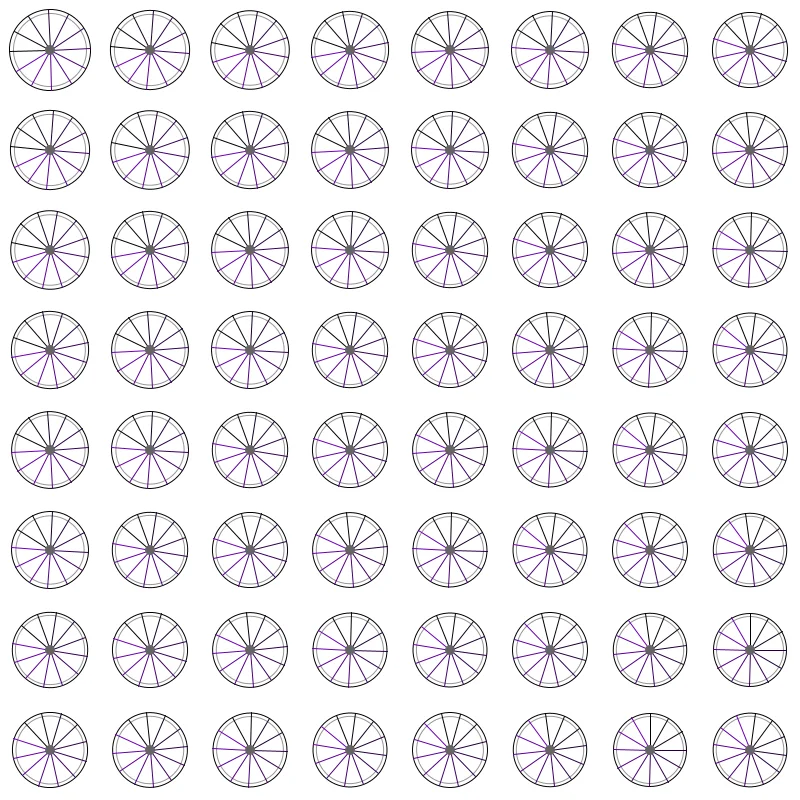
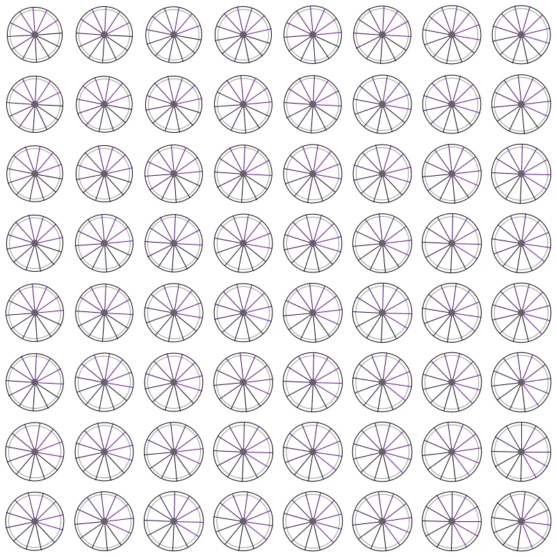

DES 111 · SPRING 2025 · PROJECT 03 · PROCESSING / GENERATIVE PATTERNS
Bicycle Wheels — Free Patterns
A small repeatable motion becomes a field of changing patterns.

01 / OVERVIEW
Concept & approach
An 8 × 8 grid of rotating bicycle-wheel motifs. Each cell uses radial spokes, a subtle pulse, and offset timing to create an ongoing rhythmic pattern.
The source uses an 800 × 800 Processing canvas, 64 tiles, twelve radial spokes per wheel, and a continuous rotation cycle with time offsets by row and column. The result explores the relationship between repetition, motion, and visual calm.
02 / SELECTED OUTPUTS
From the original coursework


03 / TOOLS & SOURCE
Built with Processing
Processing (.pde) · 8 × 8 tile grid · rotation · time offsets
Original .pde source files are provided for inspection. Opening the files in Processing may require a compatible Processing installation.